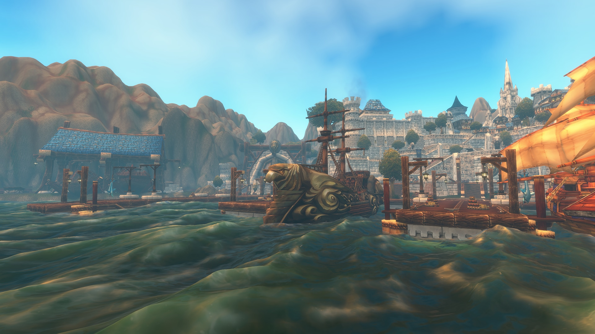
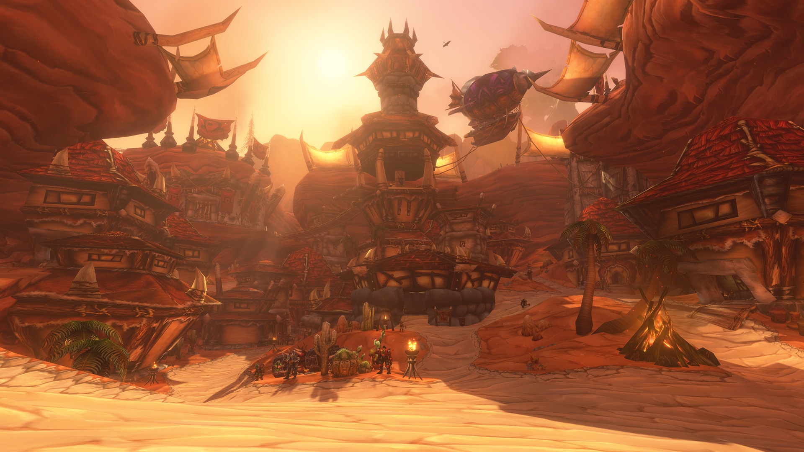
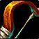

WOW FOREVER · NIVEL 30 · PVP
WoW Forever
¡Buenas, Muchamiel y comunidad!
Vengas de Twitch, YouTube, Kick o estés descubriendo el canal: bienvenido. Elige tu clase y prepara tus duelos, BGs y aventuras por Azeroth.
¿Por la Alianza o por la Horda?
Elige tu raza: raciales, macros y clases disponibles en Forever.
 Dwarf
Dwarf Night Elf
Night Elf Gnome
Gnome Skyborne (High Order)
Skyborne (High Order)
Por la Horda
 Undead
Undead Tauren
Tauren Troll
Troll✦ Calculadora de talentos
Talentos hasta nivel 60, Legacy de 0 a 5 y builds para compartir.
⚑ Razas y racialesAlianza y Horda: entra a las macros de tu raza.
¿Qué clase juegas?
Macros en inglés, explicaciones en español. Entra directamente a la guía que quieras.
 Warrior
WarriorGuerrero
Armas, Furia y Protección
Builds · Macros · Estrategias Paladin
PaladinPaladín
Golpes, curas y defensas
Builds · Macros · Estrategias
HunterCazador
Distancia, mascota y trampas
Builds · Macros · Estrategias Rogue
RoguePícaro
Sigilo, control y energía
Builds · Macros · Estrategias Priest
PriestSacerdote
Sombra, curas y disipaciones
Builds · Macros · Estrategias Shaman
ShamanChamán
Tótems, shocks y curas
Builds · Macros · Estrategias Mage
MageMago
Hielo, fuego y control
Builds · Macros · Estrategias Warlock
WarlockBrujo
Soul Link, drenajes y burst
Builds · Macros · Estrategias Druid
DruidDruida
Formas, movilidad y curas
Builds · Macros · EstrategiasSORTEO · 1 AÑO DE WOW
1.837 / 2.000 suscripciones · ¡Quedan 163 para llegar a 2k!
Ayuda a Muchamiel a llegar a 100.000 en YouTube. Si disfrutas sus vídeos y directos, suscríbete y comparte el canal.
Cifra facilitada por la comunidad el 9/10/2026; no se actualiza en directo. Consulta las condiciones y la vigencia del sorteo en el canal.
Preparación de PvP, pruebas de clases y aventuras con la comunidad. Encuentra los vídeos y anuncios de Muchamiel en sus canales oficiales.
Menos clics. Más atención al combate.
Las macros ayudan a controlar objetivos, aliados, mascotas y defensas con menos pasos. No deciden por ti, no eliminan los tiempos de reutilización y no activan habilidades que aún no has aprendido.